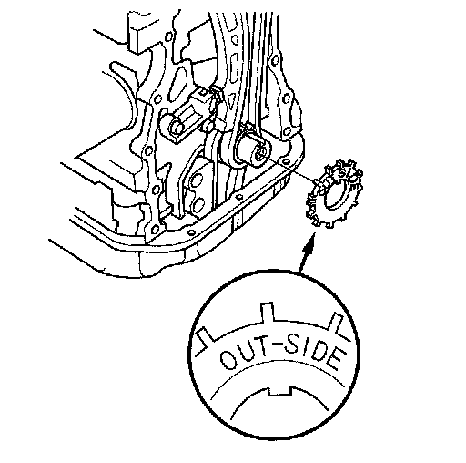
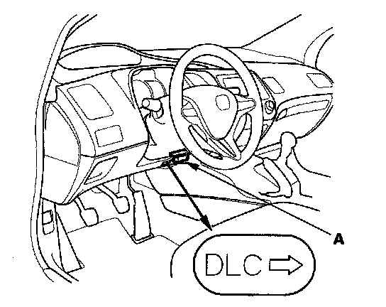

CKP Pulse Plate Replacement
CKP Pulse Plate Replacement
1. Remove the front wheels.
2. Remove the splash shield.
3. Drain the engine coolant.
4. Remove the drive belt.
5. Remove the cylinder head cover.
6. Set the No. 1 piston at top dead center (TDC). The punch mark on the variable valve timing control (VTC) actuator and the punch mark on the exhaust camshaft sprocket should be at the top. Align the TDC marks on the VTC actuator and exhaust camshaft sprocket.
7. Remove the oil cooler hose joint pipe from the water pump.
8. Disconnect the crankshaft position (CKP) sensor connector and VTC oil control solenoid valve connector.
9. Remove the VTC oil control solenoid valve.
10. Remove the crankshaft pulley.
11. Support the engine with a jack and a wood block under the oil pan.
12. Remove the upper torque rod.
13. Remove the ground cable, then remove the side engine mount bracket.
14. Remove the side engine mount bracket.
15. Remove the cam chain case.
16. Remove the CKP pulse plate.

17. Install the CKP pulse plate.
18. Check the chain case oil seal for damage. If the oil seal is damaged, replace the chain case oil seal.
19. Remove all of the old liquid gasket from the chain case mating surfaces, bolt and bolt holes.
20. Clean, and dry the chain case mating surfaces.
21. Apply liquid gasket, P/N 08717-0004, 08718-0001, 08718-0002, 08718-0003, or 08718-0009, evenly to the engine block mating surface of the chain case.
22. Apply liquid gasket to the engine block upper surface contact areas on the chain case and lower block upper surface contact areas on the chain case.
23. Apply liquid gasket, P/N 08717-0004, 08718-0001, 08718-0002, 08718-0003, or 08718-0009, evenly to the oil pan mating surface of the chain case.
NOTE: Do not install components if too much time has passed after applying the liquid gasket (for P/N 08718-0002, no more than 4 minutes, for all others, no more than 5 minutes). Instead, remove the old residue and reapply the liquid gasket.
24. Install a new O-ring on the chain case. Set the edge of the chain case to the edge of the oil pan, then install the chain case on the engine block. Wipe off the excess liquid gasket on the oil pan and chain case mating area.
NOTE:
- When installing the chain case, do not slide the bottom surface onto the oil pan mounting surface.
- Wait at least 30 minutes to allow liquid gasket to cure before filling the engine with oil.
- Do not run the engine for at least 3 hours to allow liquid gasket to cure after installing the chain case.
25. Install the side engine mount bracket.
26. Install the side engine mount bracket, then loosely tighten the new bolt and nut, and loosely tighten the bolt. Install the ground cable.
27. Remove the air cleaner assembly.
28. Loosen the transmission mounting bolt and nuts.
29. Raise the vehicle on the lift to full height.
30. Loosen the lower torque rod mounting bolt.
31. Loosen the front mount mounting bolt.
32. Lower the vehicle on the lift.
33. Tighten the side engine mount mounting bolts and nut.
34. Tighten the transmission mounting bolt and nuts.
35. Raise the vehicle on the lift to full height.
36. Tighten the lower torque rod mounting bolt.
37. Lower the vehicle on the lift.
38. Install the air cleaner assembly.
39. Install the upper torque rod, then tighten the new upper torque rod mounting bolts in the numbered sequence shown.
40. Raise the vehicle on the lift to full height, and tighten the front mount mounting bolt.
41. Install the splash shield.
42. Lower the vehicle on the lift.
43. Install the variable valve timing control (VTC) oil control solenoid valve.
44. Connect the crankshaft position (CKP) sensor connector and VTC oil control solenoid valve connector.
45. Install the oil cooler hose joint pipe to the water pump.
46. Install the crankshaft pulley.
47. Install the cylinder head cover.
48. Install the drive belt.
49. Refill the radiator with engine coolant, and bleed air from the cooling system with the heater valve open.
50. Do the CKP pattern clear/CKP learn procedure below.
Crank (CKP) Pattern Clear/Crank (CKP) Pattern Learn
Clear/Learn Procedure (with the HDS)

1. Connect the HDS to the data link connector (DLC) (A) located under the driver's side of the dashboard.
2. Turn the ignition switch ON (II).
3. Make sure the HDS communicates with the ECM. If it doesn't, go to the DLC circuit troubleshooting. Testing and Inspection
4. Select CRANK PATTERN in the ADJUSTMENT MENU with the HDS.
5. Select CRANK PATTERN LEARNING with the HDS, and follow the screen prompts.
Learn Procedure (without the HDS)
1. Start the engine. Hold the engine speed at 3,000 rpm without load (in neutral) until the radiator fan comes on.
2. Test-drive the vehicle on a level road: Decelerate (with the throttle fully closed) from an engine speed of 2,500 rpm down to 1,000 rpm with the transmission in 1st gear.
3. Test-drive the vehicle on a level road: Decelerate (with the throttle fully closed) from an engine speed of 5,000 rpm down to 3,000 rpm with the transmission in 1st gear.
4. Repeat step 2 and 3 several times.
5. Turn the ignition switch OFF.
6. Turn the ignition switch ON (II), and wait for 30 seconds.